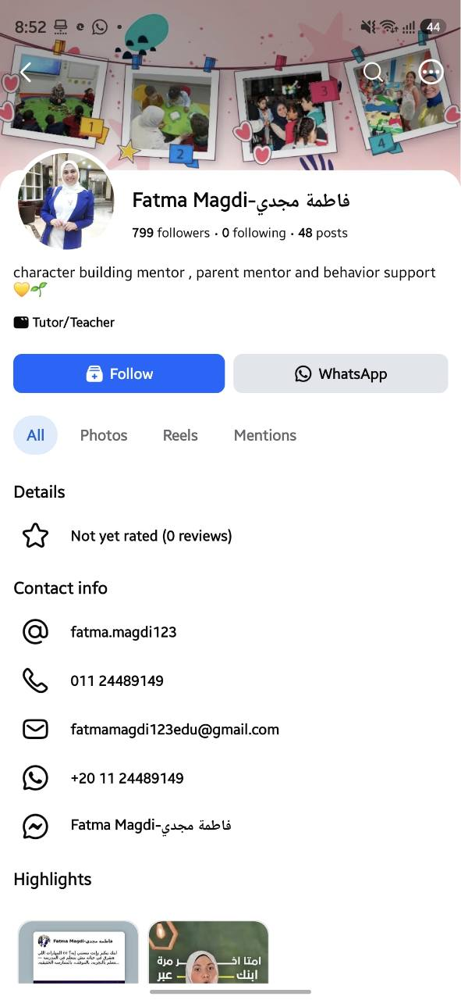

بناء الشخصية
للاستفسار عن دعم نمو شخصية الطفل وتعزيز ثقته وتواصله مع الآخرين.
استفسري عن بناء الشخصيةمعًا، خطوة بخطوة
بناء الشخصية، إرشاد الوالدين ودعم السلوك مع فاطمة مجدي.
نفهم.
نتواصل.
ننمو.
تعرّفي على فاطمة
أنا فاطمة مجدي، أعمل في بناء الشخصية وإرشاد الوالدين ودعم السلوك. أجمع هذه المجالات في مساحة تهتم بنمو الطفل وبالعلاقة بينه وبين أهله.

مجالات الدعم
اختاري المجال الأقرب لاحتياجك، وابدئي الحديث مع فاطمة.
للاستفسار عن دعم نمو شخصية الطفل وتعزيز ثقته وتواصله مع الآخرين.
استفسري عن بناء الشخصيةمساحة للأهل للسؤال عن تحديات التربية وفهم احتياجات الطفل وبناء تواصل أفضل.
استفسري عن إرشاد الوالدينابدئي حديثًا عن السلوكيات التي تواجهينها مع طفلك، واسألي عن خيارات الدعم المناسبة.
استفسري عن دعم السلوكمن أفكار فاطمة
من منشور على صفحة فاطمة
مش كل معلومة الطفل بيسمعها، يقدر يفهمها أو يفتكرها. لما الطفل يشوف، ويلمس، ويجرب، ويلاحظ، ويسأل… هو مش بيستقبل معلومة وخلاص، هو بيكوّن خبرة حقيقية مرتبطة بحواسه.
المزيد من أفكار فاطمة على فيسبوكابدئي الحديث